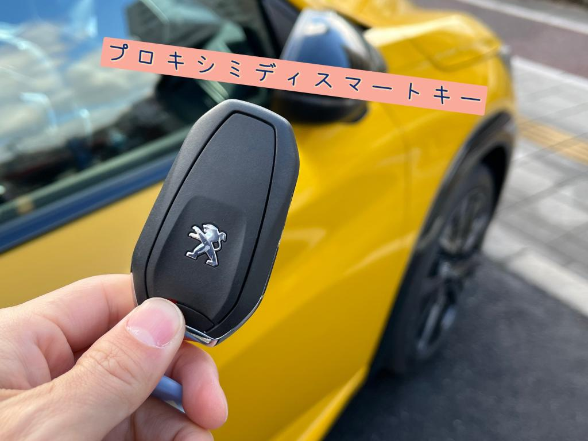
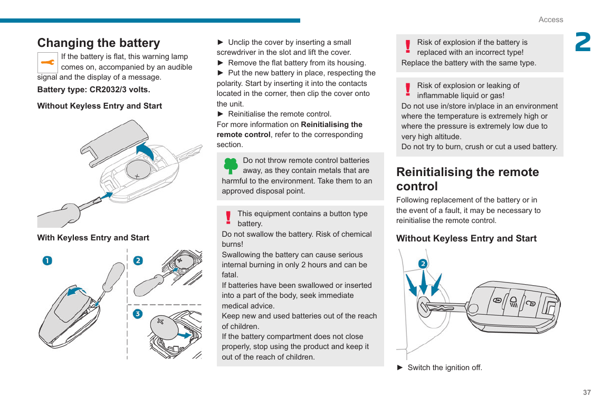
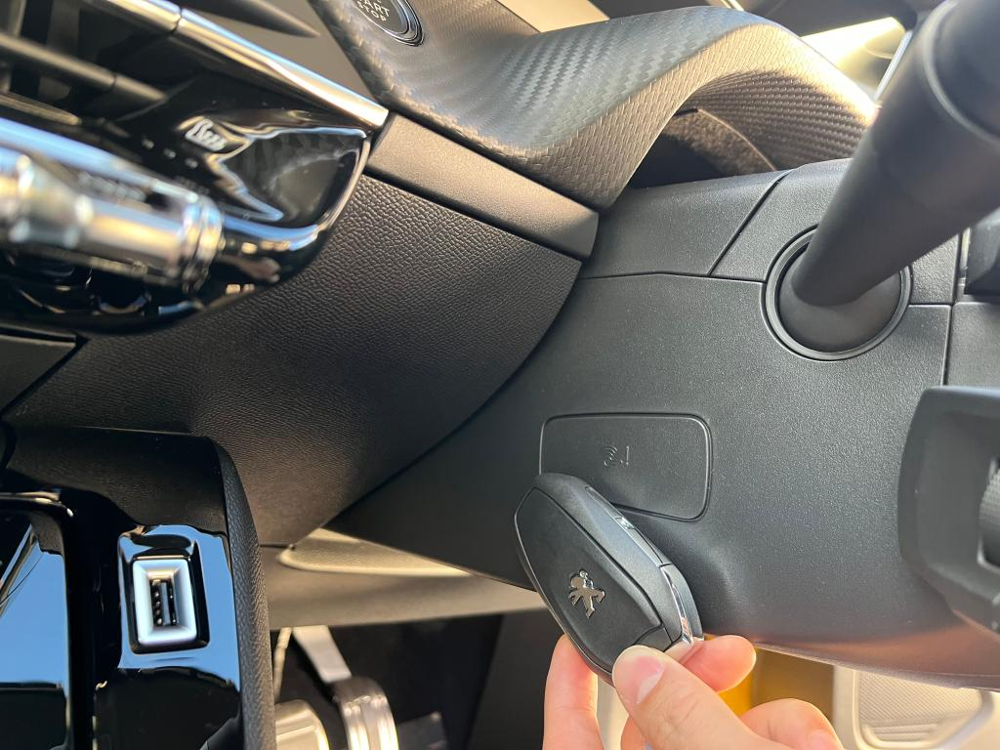
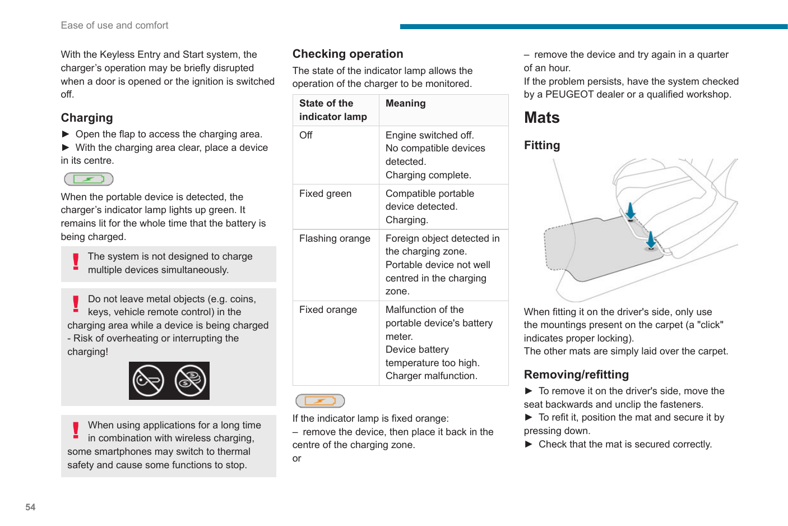

01 · IN BREVE
Le tre risposte importanti

Batteria della chiave
È una CR2032 da 3 V. Si sostituisce e non è ricaricabile.

Se l’auto non la rileva
Appoggia la chiave al lettore di emergenza sul piantone dello sterzo.

Vano wireless
Ricarica solo dispositivi compatibili Qi: non la chiave e non il Realme GT 6.
02 · BATTERIA
Sostituire la CR2032
La chiave elettronica Keyless della Peugeot 208 II usa una pila a bottone CR2032 da 3 volt. Una pila nuova di buona qualità è la soluzione corretta quando il telecomando risponde poco o l’auto segnala la batteria scarica.


- Prepara il materiale.Serve una CR2032 da 3 V nuova e un piccolo cacciavite piatto.
- Estrai la chiave meccanica.Aziona il fermo e sfila la lama integrata dal telecomando.
- Apri il coperchio.Inserisci delicatamente il cacciavite nella fessura e fai leva senza torcere il guscio.
- Rimuovi la pila scarica.Sollevala dal bordo evitando di piegare i contatti metallici.
- Inserisci la nuova CR2032.Rispetta la polarità indicata nel vano; non toccare inutilmente le superfici della pila.
- Richiudi e prova.Aggancia bene il coperchio, reinserisci la chiave meccanica e verifica apertura e chiusura.
Se il telecomando non torna operativo, esegui la procedura di riattivazione descritta qui sotto.
03 · EMERGENZA
Riattivare la chiave e avviare l’auto
Il lettore di emergenza consente all’auto di riconoscere la chiave quando la pila è scarica o il sistema Keyless non la rileva. Si trova sul piantone dello sterzo, vicino al pulsante START/STOP.

- Entra nell’auto.Se necessario, usa la chiave meccanica per aprire la porta.
- Chiudi la porta.Porta con te la chiave elettronica completa.
- Metti il cambio in sicurezza.Automatico in P; manuale in folle.
- Premi il pedale.Freno con cambio automatico; frizione con cambio manuale.
- Individua il lettore.Cerca il simbolo della chiave sul piantone dello sterzo.
- Appoggia la chiave.Tienila ferma a contatto con il lettore di emergenza.
- Premi START/STOP.Mantieni la chiave in posizione finché il quadro si accende o il motore parte.
- Completa la prova.Dopo la sostituzione della pila, verifica nuovamente telecomando e riconoscimento Keyless.
04 · RICARICA
Il vano wireless Qi della Peugeot 208
Il vano nella console centrale usa lo standard Qi 1.1. Funziona soltanto con telefoni o accessori compatibili Qi e quando le condizioni indicate dal veicolo sono rispettate.
Realme GT 6
La scheda tecnica ufficiale indica 120W SUPERVOOC via USB-C e non riporta la ricarica wireless Qi. Per ricaricarlo in auto usa un cavo USB-C e un alimentatore adatto.
Chiave Peugeot
La pila CR2032 è sostituibile, non ricaricabile. Appoggiare la chiave sul vano Qi non la ricarica e può interferire con il caricatore.
Vedi l’illustrazione del manuale Peugeot

05 · RIEPILOGO
Quale soluzione usare
| Oggetto | Alimentazione | Ricarica Qi | Cosa fare |
|---|---|---|---|
| Chiave Peugeot 208 | CR2032 da 3 V | No | Sostituire la pila |
| Realme GT 6 | 120W SUPERVOOC USB-C | No | Usare cavo USB-C |
| Telefono compatibile Qi | Qi 1.1 | Sì | Posarlo centrato sul vano |
06 · VERIFICA
Fonti ufficiali
Fonti consultate3 riferimenti · verificati il 24 agosto 2026
- 01Peugeot 208 HandbookManuale ufficiale Peugeot ServiceBoxBatteria CR2032, lettore di emergenza e caricatore Qi.
- 02Peugeot Japan — rete ufficialeUso della chiave di prossimitàFotografie della chiave e del lettore sul piantone.
- 03Realme GT 6 — specificheScheda tecnica ufficiale Realme120W SUPERVOOC e porta USB Type-C.